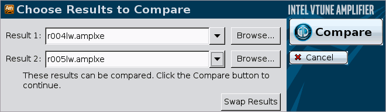
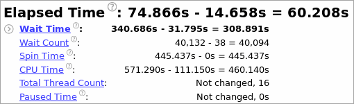
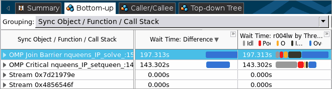
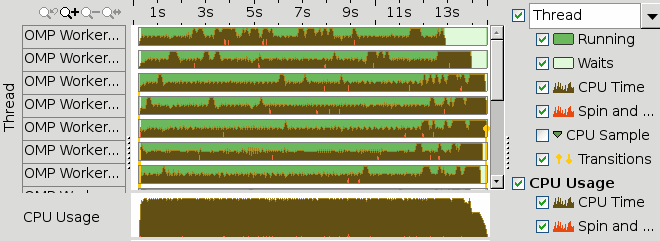

You made sure that removing the critical section gave you
41981 ms of optimization in the
application execution time. To understand the impact of your changes and how
the CPU utilization has changed, re-run the Locks and Waits analysis on the
optimized code and compare results:
You made sure that removing the critical section gave you
41981 ms of optimization in the
application execution time. To understand the impact of your changes and how
the CPU utilization has changed, re-run the Locks and Waits analysis on the
optimized code and compare results:
Compare Results Before and After Optimization
Run the Locks and Waits analysis on the modified code.
Click the
 Compare Results button on the VTune Amplifier toolbar.
Compare Results button on the VTune Amplifier toolbar.
The Compare Results window opens.
Specify the Locks and Waits analysis results you want to compare:

The Summary window opens providing the statistics for the difference between collected results.
Identify the Performance Gain by Metrics
The Result Summary section of the Summary window shows that after optimization all critical metric values has reduced significantly. The Elapsed Time data shows the optimization of 60.208 seconds for the whole application. Wait Time decreased by 308.891 seconds, Wait Count - by 40,094.

Note
The Locks and Waits analysis adds an overhead to the application execution. The overhead often depends on the number of threads and synchronization objects used in the application. This is the reason why Elapsed time data provided in the Summary window may differ from the data reported after the application launch outside of the VTune Amplifier.
In the Bottom-up pane, locate the OpenMP* critical section you identified as a bottleneck in your code. Since you removed it during optimization, the optimized result does not show any performance data for this synchronization object. If you collapse the Wait Time: Difference column by clicking the button, you see that with the optimized result you got 143.302 seconds of optimization in Wait time.

Compare Timeline Data
Open the optimized result of the Locks and Waits analysis, open the Bottom-up tab, and analyze the Timeline pane.

The optimized result does not have multiple transitions anymore.
Compare analysis results regularly to look for regressions and to track how incremental changes to the code affect its performance. You may also want to use the VTune Amplifier command-line interface and run the amplxe-cl command to test your code for regressions. For more details, see the Command-line Interface Support section in the VTune Amplifier online help.